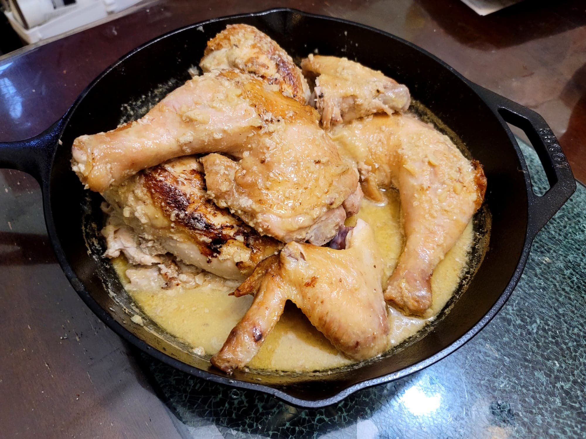

Shkmeruli

Ingredients:
- 2-5 lb Whole chicken, butterflied
- Salt, to taste
- Black pepper, to taste
- 1 tbsp Canola oil
- 4 tbsp Butter
- 10-12 cloves (1 whole head) Garlic, minced
- 1 1/3 cup Milk
Instructions:
- Preheat the oven to 400 degrees Fahrenheit. Butterfly the chicken and pat dry with paper towels. Season the chicken very generously with salt and pepper to taste.
- Heat the oil in a large cast iron skillet over medium heat. Place the butterflied chicken breast side down and let fry for 8-10 minutes, or until the skin is deep brown and crispy. Flip and fry the other side for 5-10 more minutes. Then remove the chicken from the skillet and reserve, uncovered to leaves the skin crispy.
- Add 1 1/2 tablespoon butter to the skillet. Add the garlic and cook, stirring constantly, for about 30 seconds, or until very fragrant. Then slowly whisk in the milk and whisk until it starts to simmer.
- Add the chicken back to the skillet, breast-side up. Transfer the skillet to the oven and bake for 15-20 minutes, or until the thickest part of the breast reads at least 165 degrees Fahrenheit.
- Remove from the oven. Then remove the chicken from the skillet and transfer to a cutting board and let rest. Heat the skillet over medium-low. Slowly whisk in the rest of the butter in small segments. Simmer for about 5 minutes, or until the sauce is glossy and slightly thickened.
- Then cut the chicken into 6-8 pieces and return to the pan, spooning some sauce over the chicken. Serve immediately with a side of crusty bread.